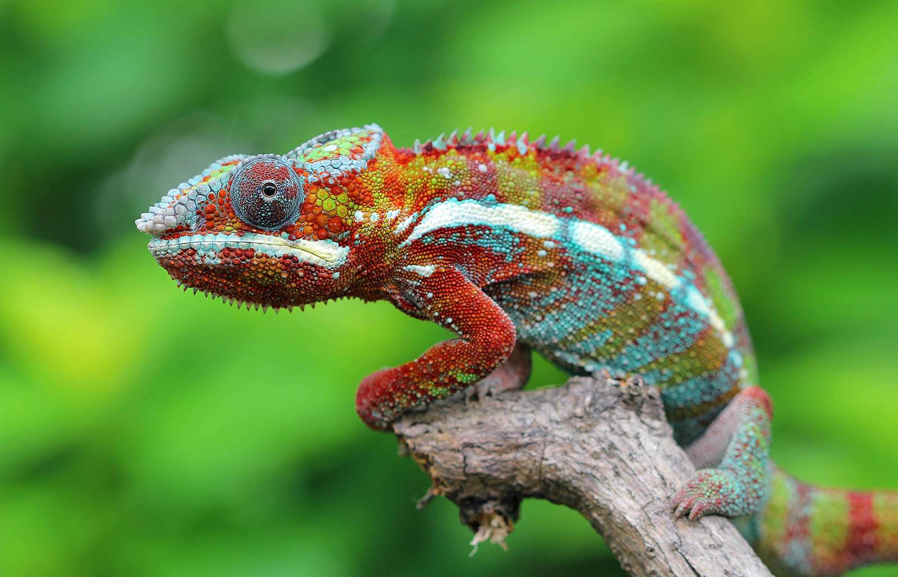
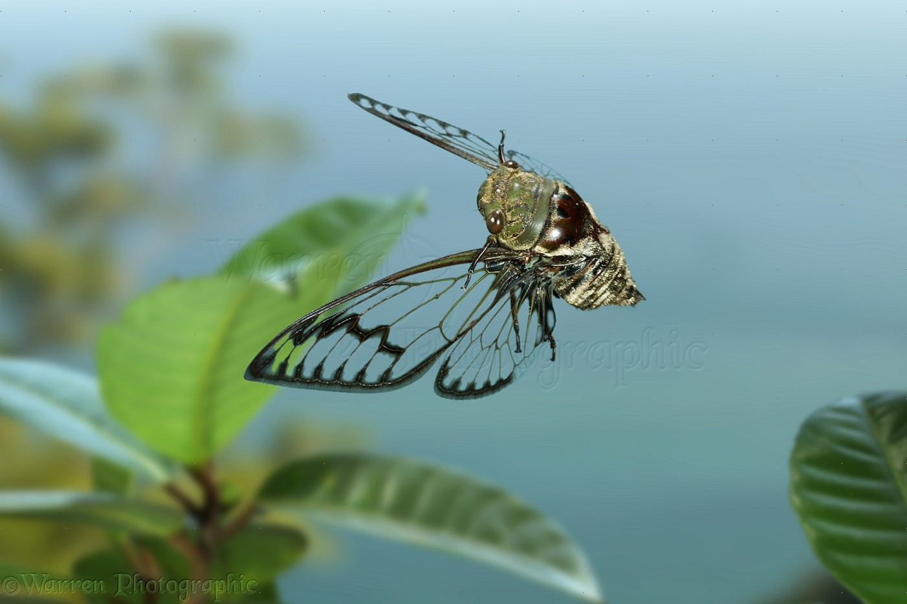

Interesting Facts about Camels
CAMELS WHICH HAVE ONE HUMP ARE CALLED DROMEDARY.
CAMELS WHICH HAVE TWO HUMPS ARE CALLED BACTRIAN.
SOME CALVES ARE BORN COMPLETELY WHITE AND TURN BROWN AS THEIR ADULT COAT COMES IN.
CAMELS CAN DRINK AS MUCH AS 40 GALLONS OF WATER AT ONCE

Interesting Facts about Chameleon
UNLIKE MANY LIZARDS, CHAMELEONS CAN’T REGROW THEIR TAILS.
THEY MAINLY CHANGE COLOR IN ORDER TO COMMUNICATE OR REGULATE BODY TEMPERATURE.
CHAMELEONS HAVE A PREHENSILE TAIL WHICH THEY USE TO WRAP AROUND TREE BRANCHES.
SOME SPECIES OF CHAMELEONS ARE VEILED CHAMELEON, PANTHER CHAMELEON,JACKSON'S CHAMELEON

Interesting Facts about Pandas
Giant pandas are good at climbing trees and can also swim.
Pandas have so many fans because they look cute.
A giant panda is much bigger than your teddy bear.

Interesting Facts about Flying Cicada
CICADAS HAVE BEEN USED AS MONEY, IN FOLK MEDICINE AND TO FORECAST THE WEATHER.
THEY ARE IN THE SUBORDER AUCHENORRHYNCHA ALONG WITH SMALLER JUMPING BUGS SUCH AS LEAFHOPPERS AND FROGHOPPERS.

Interesting Facts about Pigeon
PIGEONS HAVE EXCEPTIONAL NAVIGATING ABILITIES INCLUDING AN INTERNAL COMPASS.
PIGEONS CAN DETECT SOUNDS AT FAR LOWER FREQUENCIES THAN HUMANS ARE ABLE TO.
PIGEONS ARE ONE OF THE FEW SPECIES TO PASS THE MIRROR TEST.